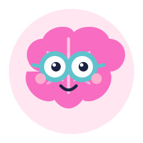
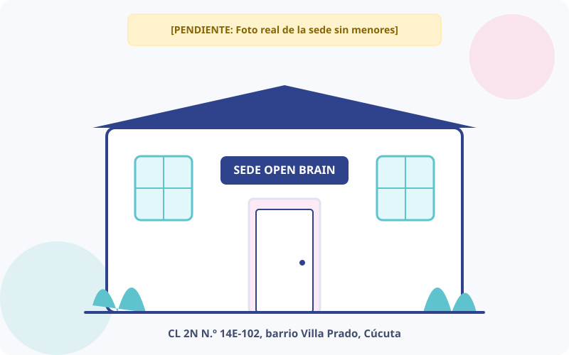

01
Acompañamiento pedagógico
Estrategias personalizadas para fortalecer los procesos de lectura, escritura, matemáticas y hábitos de estudio efectivos.
Conocer este servicioAcompañamos a niñas, niños y sus familias con atención cercana, profesional y a su propio ritmo. Promovemos la inclusión y el fortalecimiento de habilidades frente a dificultades específicas de aprendizaje en Cúcuta.

Open Brain es una organización de carácter pluralista en Cúcuta dedicada a mejorar el entendimiento y manejo de las dificultades de aprendizaje en niños, niñas y adolescentes.
Contamos con un equipo de tres profesores y especialistas comprometidos en brindar acompañamiento pedagógico, terapéutico y estimulación adecuada, orientando además a las familias en cada etapa escolar y formativa.

Escuchamos las necesidades de cada familia para construir juntos un camino claro, amable y respetuoso.
Estrategias personalizadas para fortalecer los procesos de lectura, escritura, matemáticas y hábitos de estudio efectivos.
Conocer este servicioUn espacio seguro y guiado para desarrollar habilidades socioemocionales, concentración, autorregulación y autonomía personal.
Conocer este servicioExperiencias respetuosas y lúdicas que potencian el desarrollo motriz, cognitivo y sensorial en cada etapa del crecimiento.
Conocer este servicioEstamos listos para escucharte y resolver tus dudas sobre nuestro club de aprendizaje.